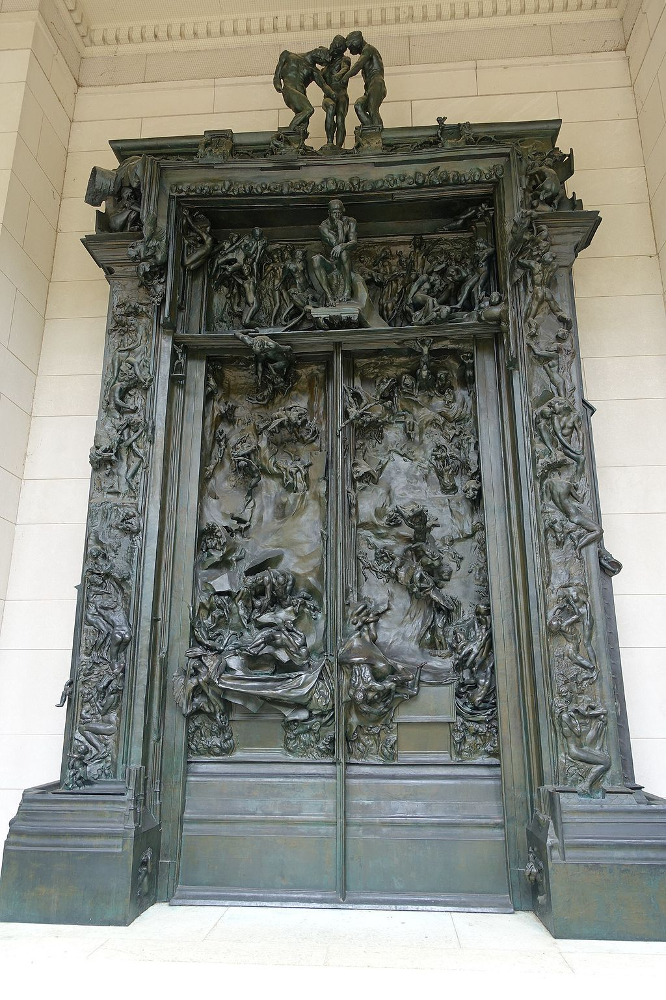

<head>
<meta charset="UTF-8" />
<meta name="keywords" content="drawing, painting" />
<meta name="description" content="drawings by Sunjy" />
<title>Sunjy</title>
<link rel="shortcut icon" type="image/x-icon" href="../../mImages/mCommon/favicon.ico" media="screen" />
<link rel="stylesheet" type="text/css" href="../../mCsses/mCommon/mCssA.css" />
<link rel="stylesheet" type="text/css" href="../../mCsses/mCommon/mCssB.css" />
<link rel="stylesheet" type="text/css" href="../../mCsses/mCommon/mCssC.css" />
<link rel="stylesheet" type="text/css" href="../../mCsses/mCommon/mCssD.css" />
<link rel="stylesheet" type="text/css" href="../../mCsses/mContent/mCssA.css" />
<link rel="stylesheet" type="text/css" href="../../mCsses/mContent/mCssB.css" />
<link rel="stylesheet" type="text/css" href="../../mCsses/mContent/mCssC.css" />
<link rel="stylesheet" type="text/css" href="../../mCsses/mContent/mCssD.css" />
</head>
<script type="text/javascript" src="../../mScripts/mContent/mContentAA.js" /></script>
<script type="text/javascript" src="../../mScripts/mContent/mContentAB.js" /></script>
<script type="text/javascript" src="../../mScripts/mContent/mContentAC.js" /></script>
<script type="text/javascript" src="../../mScripts/mContent/mContentAD.js" /></script>
<script type="text/javascript"></script> 
<script type="text/javascript">
document.write('<div class="mImgAbsolute"></div>');
/*
document.write('<p class="mFontSizeBColor" />From a white paper...</p>');
document.write('<table class="center"><tr><td>');
document.write('');
document.write('</td></tr></table>');
*/
</script>


<script type="text/javascript">
document.write('<p class="mFontSizeBColor" />The Gates of Hell</p>');
document.write('<p class="mFontSizeSColor" />The Gates of Hell is a sculptural group created by Auguste Rodin that depicts a scene from “The Inferno” from Dante Alighieri’s book the Divine Comedy.<br><br>The sculpture was commissioned in 1880 and became Rodin’s life work as he continued to work on and off on it for 37 years until he died in 1917.<br><br>Many of the characters from the “The Gates of Hell” were modeled and cast separately as stand-alone art sculptures. This evolution and is one of the reasons Rodin took so long with this masterpiece.<br><br>Many of the original small-scale sculptures used on the Gate were enlarged and reworked and became stand-alone works of art of their own. Examples include:<br>•“The Thinker” is located above the door panels.<br>•“The Kiss” was initially part of the Gates. However, Rodin removed the figures that became known as The Kiss because it seemed to conflict with the other suffering figures.<br>•“Eternal Springtime”<br>•“Adam” and “Eve”<br>•“Ugolino and His Children,” who according to the story, ate the corpses of his children after they died of starvation.<br>•“The Three Shades,” which initially pointed to the phrase “Abandon all hope, ye who enter here.”<br>•“Fleeting Love,” is located on the right door panel, it is one of several figures of lovers that represent Paolo and Francesca da Rimini.<br>•“Paolo and Francesca” is shown on the left door panel. Paolo tries to reach Francesca, who seems to slip away.<br>•“Meditation,” appears on the rightmost part of the tympanum.<br>•“The Old Courtesan,” a naked female body.<br>•“Fallen Caryatid Carrying her Stone,” is based on the figure at the top of the left pilaster.<br>•“I Am Beautiful,” is among the second set of figures on the extreme right portion of the door.<br><br>The “Gates of Hell” was never cast in bronze during Rodin’s lifetime. The sculpture was only executed in a full-size plaster model, which was kept at the artist’s studio in Meudon outside of Paris.<br><br>The first bronze cast of the Gates was commissioned in 1925. Fortunately, today, there are several bronze versions across the world, which reflect Rodin’s vision.<br></p>');
document.write('<table class="center" /><tr><td>');
document.write('<br>The sculpture was commissioned in 1880 and became Rodin’s life work as he continued to work on and off on it for 37 years until he died in 1917.<br><br>Many of the characters from the “The Gates of Hell” were modeled and cast separately as stand-alone art sculptures. This evolution and is one of the reasons Rodin took so long with this masterpiece.<br><br>Many of the original small-scale sculptures used on the Gate were enlarged and reworked and became stand-alone works of art of their own. Examples include:<br>•“The Thinker” is located above the door panels.<br>•“The Kiss” was initially part of the Gates. However, Rodin removed the figures that became known as The Kiss because it seemed to conflict with the other suffering figures.<br>•“Eternal Springtime”<br>•“Adam” and “Eve”<br>•“Ugolino and His Children,” who according to the story, ate the corpses of his children after they died of starvation.<br>•“The Three Shades,” which initially pointed to the phrase “Abandon all hope, ye who enter here.”<br>•“Fleeting Love,” is located on the right door panel, it is one of several figures of lovers that represent Paolo and Francesca da Rimini.<br>•“Paolo and Francesca” is shown on the left door panel. Paolo tries to reach Francesca, who seems to slip away.<br>•“Meditation,” appears on the rightmost part of the tympanum.<br>•“The Old Courtesan,” a naked female body.<br>•“Fallen Caryatid Carrying her Stone,” is based on the figure at the top of the left pilaster.<br>•“I Am Beautiful,” is among the second set of figures on the extreme right portion of the door.<br><br>The “Gates of Hell” was never cast in bronze during Rodin’s lifetime. The sculpture was only executed in a full-size plaster model, which was kept at the artist’s studio in Meudon outside of Paris.<br><br>The first bronze cast of the Gates was commissioned in 1925. Fortunately, today, there are several bronze versions across the world, which reflect Rodin’s vision.<br>" />');
document.write('</td></tr></table>');
</script>


